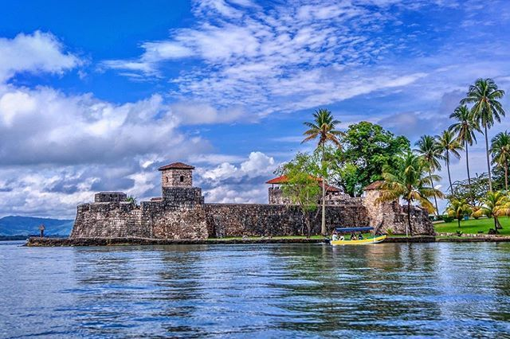
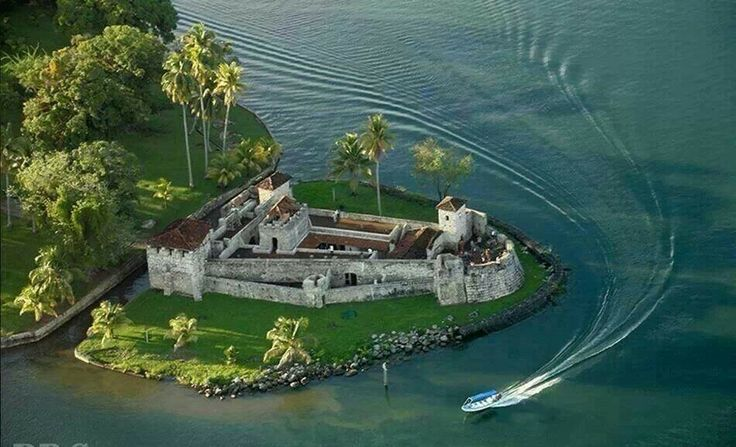
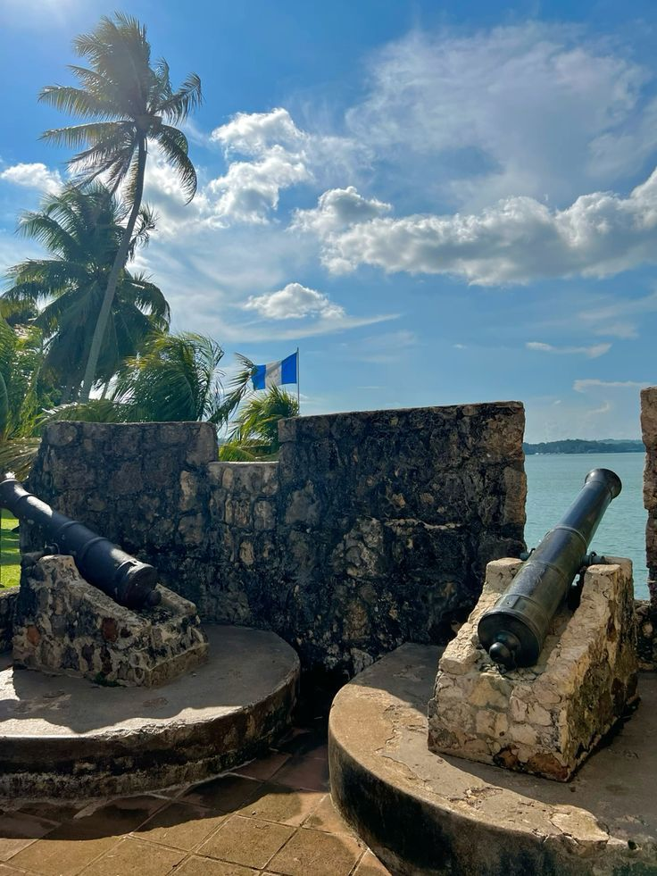

Historia de Castillo de San Felipe de Lara
- Fue construido en el siglo XVII por los españoles.
- Está ubicado estratégicamente a la entrada del Río Dulce.
- Es uno de los monumentos coloniales más importantes del país.
- 🏴☠️ Piratas ingleses atacaban frecuentemente esta zona de Guatemala.
Actividades Turísticas
Disfruta de vistas al Río Dulce y toma fotografías del castillo y la naturaleza.

Realiza recorridos en lancha por Río Dulce y visita lugares cercanos llenos de naturaleza.

Conoce cómo los españoles defendían el territorio de ataques piratas en Guatemala.

Importancia cultural del Castillo de San Felipe de Lara
Patrimonio histórico
El castillo es uno de los monumentos coloniales más importantes de Guatemala y representa parte de la historia del país.
Atracción turística nacional
El castillo atrae turistas nacionales e internacionales, ayudando a promover el turismo en Izabal.
Símbolo cultural de Guatemala
Es considerado un símbolo histórico y cultural importante por su arquitectura y ubicación junto al Río Dulce.